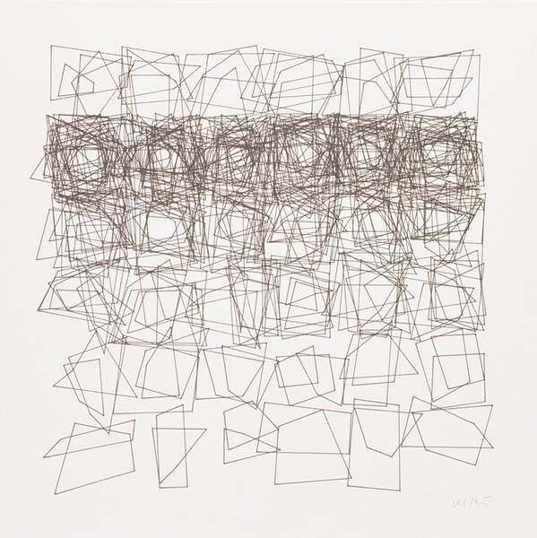

Vera Molnar, Viereckstrukturen (Square Structures), 1985, Plotterzeichnung, 25 x 25 cm
"Vera Molnar was born in Budapest but has lived and worked in Paris for many years. She tells us that she started painting at the age of twelve, her first subject matter, nymphs and trees, inspired by an uncle. She soon progressed to more geometrical themes, and in 1968 started working with computers. Her work during this period focused on the breakup of repeating units, often expressed as a series of increasingly fractured images."
source:
http://dam.org/artists/phase-one/vera-molnar
Back to Index